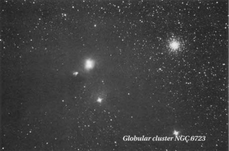

parent/ About This Book 1 The Caldwell Objects 19 Twenty Spectacular Non-Caldwell Objects 430 Appendix
Twenty Spectacular
Non-Caldwell Objects

ANYONE WHO HAS USED HIS OR HER TELESCOPE to
sweep the night sky knows the thrill of finding bright but little-observed nebulae, galaxies, and star clusters. Indeed, the sky is host to hundreds of "hidden" celestial treasures, some of which easily rival many of the Messier and Caldwell objects. While hunting for comets with my 4-inch Genesis during this project, I encountered many deep-sky objects not listed in the Messier or Caldwell Catalogs. Of course, most of them were dim or featureless, but a handful were surprisingly obvious or had some visual charm, like an edge-on galaxy's sharp needle of light or an open cluster's provocative arrangement of stars. A sampling of 20 such hidden treasures is listed below in order of declining declination. All are easily seen under a dark sky from a latitude of 20° Ν and are fine objects in a 4-inch or larger telescope.
430
NGC 4605
Type: Barred Spiral Galaxy (SBc pec) Con: Ursa Major
RA: 12h 40.0m Dec: +61° 36'
Mag: 10.3
SB: 13.1
Dim: 5.7' x 2.5'
Dist: 13 million light-years
NGC 4605 is a peculiar barred spiral galaxy (seen only 21° from edge on) about 5½° northeast of Delta (δ) Ursae Majoris (Megrez) in the Big Dipper's Bowl. Despite its proximity to the Bowl, amateurs do not commonly target the galaxy, probably because it has tough competition from the better known Ursa Major galaxies M51, M101, and M108. Yet NGC 4605 rivals Μ108 in brightness, apparent size, shape, and the level of detail it presents at the eyepiece.
Deep-Sky Companions: The Caldwell Objects
The galaxy received some incidental recognition after January 1996, when the public first saw the now-famous Hubble Deep Field — a 10-day-long Hubble Space Telescope exposure revealing at least 1,500 new galaxies, some as faint as 30th magnitude, in an area of sky only 2' across. The Deep Field lies only about 42' to the northwest of NGC 4605, which often appeared in photographs and finder charts that were published to help amateurs locate the tiny sky patch scrutinized by Hubble. Through the Genesis NGC 4605 (whose true linear diameter is a modest 22,000 light- years) appears as a warped bar, oriented northwest to southeast, surrounded by a spindle of light. Its disk displays a mottled texture and has a large and obvious patch of dust in its northwestern quadrant. Long-exposure photographs reveal a larger envelope surrounding the spindle, several ΗII regions, and what appears to be a tiny galaxy protruding from NGC 4605's southeastern tip. NGC 4605 resides in the Coma-Sculptor Cloud of galaxies and is receding from us at 140 km per second.
2
NGC 7789
Type: Open Cluster Con: Cassiopeia
RA: 23h 57.0m Dec: +56° 43'
Mag: 6.7
Diam: 25'
Dist: 6,000 light-years
Just 3° southwest of Beta (β) Cassiopeiae, or Caph (the westernmost star in Cassiopeia's famous W asterism), and midway between Rho (ρ) and Sigma (σ) Cassiopeiae, lies the large, uniform glow of NGC 7789. This star cluster is a magnificent spectacle in 7x35 binocu-
lars, appearing nearly as large as the full Moon and just as round. In fact, when seen through binoculars the cluster looks like a tailless comet crossing the rich star fields of the northern Milky Way. NGC 7789 lies at or just beyond the limit of unaided vision, making it a great naked-eye challenge under dark skies. The Rev. T. W. Webb, in his Celestial Objects for Common Telescopes, calls it a" [b]eautiful large faint cloud of minute stars," while John Herschel called it a "most superb" cluster. Piazzi Smyth, though, saw NGC 7789 as a "mere condensed patch in a vast region of inexpressible splendour, spreading over many fields; including the whole Galaxy through this and the adjacent constellations." At its estimated distance of 6,000 light-years, the cluster's angular diameter corresponds to a respectable physical size of 44 light-years. There are 583 stars in the cluster, with the brightest shining at magnitude
10.0. Many of NGC 7789's stars can be spied at
23x, and higher magnification shows a distinct background of unresolved suns. Equally impressive in wide-field telescopes is the complex of dark nebulae in and around the cluster. These impressive veils are not outlined on any star atlas that I'm aware of.
NGC 281 and IC 1590
Type: Emission Nebula and Open Cluster Con: Cassiopeia
RA: 00h 52.8m Dec: +56° 38'
Mag: 8.0 (nebula); 7.4 (cluster)
Dim: 35' x 30' (nebula)
Diam: 4.0' (cluster) Dist: ~7,500 light-years
The third object in this short list, NGC 281 in Cassiopeia, is a bit of an enigma. Sky Atlas
Twenty Spectacular Non-Caldwell Objects 431

2000.0 (second edition), Uranometria 2000.0, and the Millennium Star Atlas all depict it as a nebula and a cluster, and it is described as such in NGC 2000.0 and in the Observing Handbook and Catalogue of Deep-Sky Objects. But, as Brent Archinal of the U.S. Naval Observatory notes, NGC 281 is not a star cluster. Rather, he explains, it is the nebulosity associated with the star cluster IC 1590. NGC 281 was an Edward Emerson Barnard discovery, while IC 1590 was discovered later by Guillaume Bigourdan. "In any case," Archinal writes, "Bigourdan . . . clearly stated these two were not the same object. Therefore the correct name for the cluster is IC 1590."
Archinal notes a further complication —
namely, that the Deep Sky Field Guide to Uranometria2000.0lists NGC 281 and IC 1590 as two distinct open clusters at different positions, while Sky Catalogue2000.0 asserts, in its Open Cluster Cross Index, that NGC 281 and IC 1590 are the same object. That confusion aside, the nebula (NGC 281) is quite an obvious irregular patch of glowing gas a mere 1¾° east of Alpha (α) Cassiopeiae (Shedir); its Moon-sized glow forms the apex of a triangle with Shedir and Eta (η) Cassiopeiae and is visible in 7x35 binoculars under a dark sky. It's easily picked up in a sweep with the 4-inch at 23x. At first glance the nebula has a cometlike quality to it, but once you focus your attention on it, the small cluster (IC 1590) embedded within it draws in your attention. The cluster sports 90 stars within its tiny disk, with the brightest being the magnitude-7.8 triple star HD 5005, which contributes most of the ultraviolet light that powers the nebula. Archinal suspects many more of the stars that appear within the nebula may be associated with the cluster.
432
NGC 5866
Type: Lenticular Galaxy (SO) Con: Draco
RA: 15h 06.5m Dec: +55° 46'
Mag: 9.9
SB: 12.6
Dim: 7.3' x 3.5'
Dist: 50 million light-years
Just 4° southwest of Iota (ι) Draconis, or Edasich, lies a remarkable lenticular galaxy seen almost exactly edge on. In long-exposure photographs NGC 5866 sports a very bright ring and a prominent dust lane, which are slightly tilted with respect to one another and to the equatorial plane of the galaxy's central lens — making each side of the galaxy look like a pair of slightly opened scissors. X-ray emission has been observed along the galaxy's major axis, as has ionized gas. Early photographs overexposed the dust lane, leading astronomers to misclassify this lenticular system as an elliptical galaxy. NGC 5866 may contain a considerable 1 trillion solar masses or thereabouts. Assuming its estimated distance of 50 million light-years is correct, the galaxy spans some 90,000 light-years.
Until the late 1990s even the reliable NASA
Extragalactic Database boldly listed NGC 5866 as Messier 102. So the history behind the mysterious Μ102, and its questionable relationship to NGC 5866, deserves repeating. In Messier's catalog, Μ102 is described in the following way:
Nebula between the stars (o) [Omicron] Bootis and (ι) [Iota] Draconis. It is very faint. Close to it is a sixth-magnitude star.
Deep-Sky Companions: The Caldwell Objects
This entry is obviously in error, because Omicron Bootis and Iota Draconis lie nearly 40° apart — making them far too imprecise a marker for visual stalwarts like Messier or his contemporary, Pierre Mechain, who purportedly discovered this nebulous object. So what is M102?
One could reasonably argue that the star Theta (θ) Boötis was misread as Omicron (o) Bootis, since an observer can find several faint galaxies between Iota Draconis and Theta Bootis, which lie about 11° apart, and the brightest and most conspicuous of these galaxies is NGC 5866. This explanation is enticing, but there is no need for it, nor for any other theories on Μ102 (though cooking up such theories remains popular to this day, probably because everyone enjoys a good mystery). For Mechain explained the mystery of Μ102 in a letter that he published in the 1786 Berliner Astronomisches Jahrbuch:
On page 267 of the Connaissance des Temps for 1784 M. Messier lists under No. 102 a nebula which I have discovered between omicron Bootis and iota Draconis. This is nothing but an error. This nebula is the same as the preceding No. 101. In the list of my nebulous stars communicated to him M. Messier was confused due to an error in the sky-chart.
Simply put, Μ102 is not a mystery unless you want it to be; in light of the historical evi- dence, NGC 5866 should lose any association with the name "M102."
Certainly one can wonder why neither Messier nor Mechain discovered NGC 5866, because it is a wonderful blaze of light. In the Genesis at 23x the galaxy is immediately obvious as a condensed elliptical glow with white winglike extensions. At higher powers the galaxy shows a prominent ring with a tight
core that gradually focuses to a pinpoint. Overall, NGC 5866 is a much more dramatic object than M99 or Μ100, or Μ101, for that matter. So it is understandable why some amateur orga- nizations include NGC 5866 in their Messier Catalogs and Marathons. We like to think of Messier's catalog as being chock full of the sky's most magnificent objects, so why not insert the meritorious NGC 5866 into that gap between M101 and M103?
Unfortunately, creating a "hit list" of the sky's most wonderful deep-sky objects was not Messier's intent. His catalog was drafted to document objects that masqueraded as comets, objects that for the most part had been swept up during comet hunts. Indeed, NGC 5866 cannot be singled out, because Messier and Mechain did not include other conspicuous deep-sky objects, as the Caldwell Catalog amply demonstrates. Not until 1789, when William Herschel was methodically sweeping the heavens with his telescopes, did anyone unambiguously document an encounter with the object now known as NGC 5866. We should be careful not to let our modern desires interfere with history.
NGC 1528
Type: Open Cluster Con: Perseus
RA: 04h 15.3m Dec: +51° 13'
Mag: 6.4
Diam: 18'
Dist: 2,400 light-years
During the cool winter nights of the Northern Hemisphere, our galaxy's outer arms arc grace- fully over the North Celestial Pole like a garden trestle covered in snow. Night after night, the
Twenty Spectacular Non-Caldwell Objects 433
stars of this Milky Way region sail up and over the pole until, by February, the Perseus Arm of our home spiral galaxy dominates the view high in the north after sunset. And it is here that many amateurs will train their telescopes on some of the sky's most prominent star clusters and stellar associations, including the famous Double Cluster (Caldwell 14), M34, and the Alpha Persei Association. But there is a rather distinctive cluster, NGC 1528, which is casually overlooked in favor of its more popular neighbors. Located only about 1¾° east-northeast of 4th-magnitude Lambda (λ) Persei in the Champion's knee, NGC 1528 shines at magnitude 6.4 and makes a decent naked-eye challenge for anyone under dark skies. It is a fine object whose brightest members will start to appear to the dedicated observer in even the smallest of binoculars.
At 23x in the Genesis the cluster appears
large and bright, with a veil of well-resolved suns scintillating in front of a fuzzy backdrop of fainter ones. Brent Archinal catalogs 165 stars in NGC 1528, with the brightest shining at magnitude 8.7. The cluster's brightest stars form a teardrop-shaped asterism that is elongated along a northwest-to-southeast axis; its narrow tip points to the southeast. In Star-Hopping for Backyard Astronomers, Alan M. MacRobert notes that through a 6-inch reflector under suburban skies a dark U-shaped bay can be seen at the cluster's western end, where it is outlined by seven bright stars. This dark bay is but one of many wisps of darkness that meander through the region. Under the dark skies of Hawaii the cluster appears to be composed of shards of starlight separated by dark cracks, as if a crystal teardrop had accidentally shattered on a sheath of black ice illuminated by moonlight.
434
NGC 4490
Type: Barred Spiral Galaxy (SBd pec) Con: Canes Venatici
RA: 12h 30.6m Dec: +41° 38'
Mag: 9.8
SB: 13.0
Dim: 5.6' x 2.8'
Dist: 25 million light-years
Canes Venatici harbors a wealth of extragalactic treasures, and NGC 4490 is one of the more prominent ones. This peculiar galaxy lies a mere 40' northwest of 4th-magnitude Beta (β) Canes Venaticorum (Chara), and it is an easy target for small-telescope users. The 19th-century British observer Rev. T. W. Webb described NGC 4490 as a "[l]ong, easily resolvable" nebula. Indeed, the galaxy's size, shape, and brightness rival those of some of the more fashionable Messier galaxies in neighboring Coma Berenices, such as M88, M99, and M100. At a distance of 25 million light-years, however, NGC 4490 is half as far away as they are and, with a diameter of 36,000 light-years, less than half as big.
A chaotic late-type spiral, NGC 4490 is in-
clined 65° from face on and is a most fascinating system, with a ringtail core wrapped in a cocoon of stellar filigree and Η II regions. The galaxy's northwestern end looks warped, and it is here that bizarre drips of starlight make a dogleg to the north, to yet another pool of tortured nebulosity surrounding the galaxy's companion, NGC 4485. In high-resolution images taken with large telescopes, NGC 4490 looks like an eviscerated galaxy, one whose entrails have been ghoulishly ripped from the carcass and tossed wildly asunder. Through the 4-inch NGC 4490 is a flying-saucer-shaped lens of light with faint extensions.
Deep-Sky Companions: The Caldwell Objects
NGC 404
Type: Lenticular Galaxy (SO) Con: Andromeda
RA:01h09.4m Dec: +35° 43'
Mag: 10.3
SB: 14.0
Diam: 6.6'
Dist: 8 million light-years
NGC 404 is truly a hidden treasure. This lentic- ular galaxy lies only 6' northwest of the 2nd- magnitude topaz star Beta (β) Andromedae (Mirach), whose light interferes with — but does not drown out — this bright little gem. NGC 404 belongs to a small group of galaxies in the Coma- Sculptor Cloud and is approaching us at a speed of 35 km per second. The galaxy is quite small, measuring only 16,000 light-years in diameter, and images of it through large telescopes reveal it to be a roundish spiral. Its small bulge contrasts well with a surrounding dust ring. The galaxy is just visible in a 60-mm refractor, and it takes magnification remarkably well, so use enough power to remove Beta Andromedae from your field of view. In the 4-inch the circular galaxy has a milky-smooth texture. A faint "star" punctuates its core; high-resolution images show that NGC 404 has a very small, extremely bright nucleus, with a dark crescent and patchy whorls of darkness in its lens. A 1995 Hubble Space Telescope image of this region reveals a bright, unresolved point source (less than 1 parsec across) surrounded by several fainter ones. The latter are presumably star-forming regions responsible for the galaxy's extended nebular emission and for the young stellar features seen in spectra of the nucleus.
Hockey Stick; The Hook
NGC 4656
Type: Barred Spiral Galaxy (SBm pec) Con: Canes Venatici
RA: 12h44.0m Dec: +32° 10'
Mag: 10.5
SB: 14.8
Dim: 18.8' x 3.2'
Dist: 23.5 million light-years
Larry Mitchell of the Houston Astronomical Society first introduced me to NGC 4656 during the 1998 Texas Star Party. He calls it the Hockey Stick galaxy, while his observing compatriot Barbara Wilson refers to it as The Hook. After seeing this galaxy through their large reflectors, I understand both monikers. Situated ½° southeast of NGC 4631 (Caldwell 32), NGC 4656 is an irregular barred spiral galaxy, merely 10° from edge on, with a warped appendage on its northeastern end. Known as NGC 4657, this appendage juts out at right angles to the main shaft like the hooked blade of a hockey stick. The most likely explanation for NGC 4656's distorted appearance is a tidal interaction between it and NGC 4631. In his 1994 Carnegie Atlas of Galaxies, Allan R. Sandage writes that the pair's atomic- hydrogen gas has provided evidence of a tidal encounter between the two galaxies. The two are 350,000 light-years apart on the plane of the sky. Wilson likens these interacting spirals to "two ships nearly crashing in the night, both listing from the encounter, with [NGC] 4656 definitely the loser, but [NGC] 4631 . . . not unscathed."
NGC 4656 is easily visible in the 4-inch
Genesis. Southwest of what may be considered its nuclear region, the galaxy is bright; on the
Twenty Spectacular Non-Caldwell Objects 435
opposite side it is very faint and appears seg- mented along its major axis. NGC 4656 is a large system, with a physical diameter of 91,000 light- years. In long-exposure photographs the galaxy resolves into a smattering of stars and Η II regions, the brightest of which lie approximately 18" west of the apparent nucleus.
NGC 1333
Con: Perseus
Type: Bright Nebula
RA: 03h 29.3m Dec: +31° 25'
Mag: 3.6
Dim: 6' x 3'
Dist: ~1,100 light-years
NGC 1333 is a simple but beautiful reflection nebula. It lies 3¼° southwest of Omicron (o) Persei and almost nicks the spot where Perseus, Taurus, and Aries meet. At magnitude 3.6 the nebula is quite bright, but it's also very tiny. Several times I have swept it up during my comet hunts (even in moonlight) with the 4-inch refractor, and Brian Skiff and Christian Luginbuhl say it's not difficult to see in a 60-mm refractor. At first glance, the nebula has a round form with a uniform luster, but closer inspection reveals it to be a mottled kidney bean of light elongated from north-northeast to south- southwest.
On most star charts NGC 1333 is far from
eye-catching. In the second edition of Sky Atlas 2000.0, for instance, the symbol for NGC 1333 is a tiny box, no bigger than the disk representing a 4th-magnitude star. The box looks like an afterthought, perhaps a move to flesh out that region of sky with pretty symbols. Certainly observers moving their fingers
436
across their star charts while selecting objects for a night's work would not stop there. NGC 1333 is literally dwarfed by the Pleiades star cluster just 8½° to the southeast, and by the challenging but famous California Nebula (NGC 1499) a similar distance to the northeast. Yet surprisingly, at the eyepiece, NGC 1333 is easier to see than the Merope Nebula (IC 349).
I find the very simplicity of NGC 1333 an attraction — the face of a shy specter masked in a white veil. The nebula is illuminated by a magnitude-10.5 star adorning its northeastern corner like a jewel in a crown. Recent near- infrared images also reveal some 80 pre-main- sequence stars embedded in this region of active star formation. The dark nebula Barnard 205 lies just to the south of NGC 1333, and its two fingers of darkness seem to be pinching the reflection nebula's southern tip. This dark nebula stretches for nearly ½° and is a wonderfully complex agglomeration of shadows. Exploring this hidden corner of Perseus through the Genesis at low power is like tiptoeing through an old, forgotten house dusted with cobwebs and littered with keepsakes.
10
NGC 1647
Type: Open Cluster Con: Taurus
RA: 04h 45.7m Dec: +19° 07'
Mag: 6.4
Diam: 40'
Dist: 1,800 light-years
I thank my wife, Donna, for introducing me to NGC 1647, a wonderful but somewhat neglected open cluster near the V-shaped face of Taurus, the Bull. One night Donna stood in the driveway of our home in Volcano, Hawaii, and
Deep-Sky Companions: The Caldwell Objects
pointed her 7x35 binoculars toward the Hyades cluster (Caldwell 41), then in the eastern sky. Suddenly she exclaimed that she had discovered a comet and pointed a finger to a spot about 3½° northeast of Aldebaran. There, to my surprise, I saw a beautiful open cluster that had, for all these years, escaped my gaze. Later, while studying the Hyades (Caldwell 41) for this book, I learned that the magnitude-6.4 glow of NGC 1467 could be seen with the naked eye from a dark sky.
Through binoculars NGC 1467 is a lovely cluster, appearing as a round ghostly glow with an apparent size larger than that of the full Moon. Undoubtedly, since I had lived most of my life in the Boston area, light pollution must have drowned out the cluster's pale glow, making it easy to sweep past without notice. The Rev. T. W. Webb's description of the cluster in his Celestial Objects for Common Telescopes is rather perplexing, for he writes: "Stars [of magnitudes] 8.5 to 10, round wide pair" (I believe there should be a comma between "round" and "wide pair"). The cluster is indeed quite round, and most of its 200 stars can be found within ½° of its core, where a fine pair of 9th-magnitude stars dominates the view. Other bright stars spiral out from the core in crooked or disjointed arms. NGC 1647 is not densely packed, however, and the view is best at low power; in fact, Roger Clark suggests 20x for a 6-inch telescope and 27x for an 8-inch. In 1996 Michael Geffert and his colleagues visually inspected NGC 1647 on a National Geographic Society - Palomar Observatory Sky Survey print and determined the position of this cluster's center; they also determined that the Cepheid variable SZ Tauri (whose apparent visual magnitude ranges from 6.50 to 6.86 every 3.15 days) is probably not a member of this cluster.
11
Ghost Globular
NGC 5897
Type: Globular Cluster Con: Libra
RA: 15h 17.4m
Dec:-21° 01'
Mag: 8.5
Diam: 11'
Dist: 42,000 light-years
NGC 5897 is an unusually loosely structured globular cluster that haunts the dim and unas- suming stars of Libra. Ernst Hartung calls it "irregularly round" and "conspicuous." The cluster can be seen on clear, moonless nights as a large amorphous glow nearly one-third the apparent size of Omega (ω) Centauri (Caldwell 80). Look for what appears to be the detached head of a flaring comet nearly midway between, and just south of, a line joining Delta (δ) Scorpii and the wide double star Alpha1,2 (α1,2) Librae (Zubenelgenubi). At a glance in the 4-inch at 23x, the cluster's oblate disk appears buffed and featureless, as if its stars had been scrubbed away with bleach. But with a little concentration you can resolve the glow into a patchwork of glittering hazes that lacks a strong central condensation. The cluster's brightest stars shine at magnitude 13.3, and they appear to form slight needles of light that border minute "holes" at the core. I call NGC 5897 the Ghost Globular because it resembles a ghost image of the globular M55 in Sagittarius. Actually NGC 5897 measures nearly 135 light-years across, making it 68 percent larger than M55.
Adm. William Henry Smyth wrote exten-
sively about this "large compressed cluster of minute stars," saying "it is faint and pale, but owing to the fineness of the night, steadiness
Twenty Spectacular Non-Caldwell Objects 437
of gaze, and excellent action of the telescope, [it] was as well seen as so low and so awfully remote an object could be expected to be." William Herschel found the cluster in March 1785 and considered it an important discovery because, in his view, it was "one of the gradations from the palpable congeries of stars . . . towards the distant nebulae."
12
NGC 1360
Type: Planetary Nebula Con: Fornax
RA: 3h 33.2m Dec: -25° 52'
Mag: 9.4
Diam: 6.5'
Dist: 1,100 light-years
Concealed among the dim suns of Fornax, mixed within the wide fanfare of galaxies that populate the region, lies one of the sky's brightest planetary nebulae, one which richly rewards small-telescope users: NGC 1360. This often- overlooked gem has an immediate "wow, what is that?" appeal, especially when stumbled upon at the eyepiece. Robert Burnham Jr. refers to NGC 1360 as a "peculiar nebula. . . usually classified as a planetary." In 1968 Lubos Kohoutek called it an "uncommon planetary." And Mario Perinotto, who studied the central star's spectrum in the early 1980s, placed it in the Wolf-Rayet category of planetary nebulae, meaning the central star appears to be in a state of flux and is violently ejecting matter into the surrounding shell. Steven
J. Hynes lists NGC 1360 in his work Planetary
Nebulae and classifies it as a Type III (a planetary with an irregular disk).
Not much is heard about NGC 1360's visual appearance from amateurs living at midnorth-
438
ern latitudes, which is surprising. Then again, as seen from the north, Fornax, the Furnace, is not among the most glamorous constellations, as its 110 4th- to 7th-magnitude stars all lie near the southern horizon in mid-December. Still, NGC 1360 is at nearly the same declination as Antares and the globular cluster M4.
You will find this "peculiar planetary" about 5½° northeast of magnitude-3.8 Alpha (α) Fornacis, less than 15' southeast of a mag-nitude-
6.4 star. (Note that the second edition of Sky Atlas 2000.0 curiously fails to show NGC 1360.) NGC 1360 is not only bright as plane-taries go, it's huge; while many planetaries measure mere arcseconds across, NGC 1360 spans a respectable 6½ arcminutes, making it about five times larger than M57, the Ring Nebula, on the plane of the sky. Its central star also burns at an unusually bright 11th magnitude, making it a cinch to find in even the smallest of backyard instruments. Christian Luginbuhl and Brian Skiff note that the nebula is a large, smooth, elongated glow with hints of patchi-ness visible in larger instruments. Through the Genesis NGC 1360 is a simple yet spectacular sight — a conspicuous central star surrounded by a fantastic oval shell that's evident at 23x. At 72x the shell appears delicately mottled, like slightly curdled milk, or an egg made of white marble. The nebula's eastern half is the most noticeably mottled.
Deep-Sky Companions: The Caldwell Objects
13
NGC 288
Type: Globular Cluster Con: Sculptor
RA: 00h 52.8m
Dec: -26° 35'
Mag: 8.1
Diam: 13'
Dist: 27,000 light-years
Globular cluster NGC 288 resides near one of the southern sky's greatest attractions — the oblique spiral galaxy NGC 253 (Caldwell 65). Although the globular lies only 1¾° to the southeast of the galaxy, that's just about ¾° too far to be placed in the same low-power field as NGC 253 in many modern telescopes. But with a field of view nearly 3° wide, the Genesis removes NGC 288 from the shadows of obscurity and thrusts it into the telescopic "spotlight." And there are few sights in the sky as rewarding as this dramatic pairing of deep-sky splendors. Curiously, Patrick Caldwell Moore did not include NGC 288 in his catalog, and Robert Burnham Jr. fails to highlight it in his Celestial Handbook, even in passing. The Rev. T. W. Webb acknowledges NGC 288 in his Celestial Objects for Common Telescopes, though he simply calls it "bright."
Both NGC 253 and NGC 288 can be easily
spotted in 7x35 binoculars, shining at 7th and 8th magnitude, respectively. NGC 288 is less than 9° southeast of Beta (β) Ceti (Deneb Kaitos), 3° northwest of Alpha (α) Sculptoris, and just 40' north and slightly east of the South Galactic Pole. The cluster looks like a perfect sphere at 23x and starts to resolve into individual stars at 72x (the cluster's brightest member shines at magnitude 12.6), especially at the fringes, which become patchy with clumps of
starlight. High power reveals many veins both dark and bright emanating from a hollow central wedge of stars. In larger telescopes the cluster is quite remarkable. Christian Luginbuhl and Brian Skiff compare their view of NGC 288 through a 12- inch reflector to that of the great globular M4 in Scorpius, though they admit it is not as rich.
14
NGC 7793
Type: Spiral Galaxy (Sdm) Con: Sculptor
RA: 23h 57.8m
Dec: -32° 35'
Mag: 9.2
SB: 13.6
Dim: 9.2' x 6.4'
Dist: 9 million light-years
NGC 7793 is a fine galaxy hidden in the star-poor region of southwestern Sculptor. It lies some 13° east-southeast of brilliant Fomalhaut, Alpha (α) Piscis Austrini, and is near the apex of a nearly perfect isosceles triangle whose other corners are the magnitude-4.4 stars Beta (β) Sculptoris (7¼° to the southwest of the galaxy) and Gamma (γ) Sculptoris (8° to the west). The galaxy is a prototypical late-type spiral, and it is receding from us at a speed of 230 km per second. Through the Genesis at 23x the 9th-mag-nitude galaxy appears quite large, and it looks very much like the smoothly textured head of a comet. At 72x the galaxy's core appears sharply stellar; the bright haze immediately surrounding the core is dappled with fuzzy clumps that would cause any small-telescope user to believe he or she has chanced upon a globular cluster near the limit of resolution. The galaxy's fainter outer envelope is slightly elliptical and shows less mottling. Although NGC 7793 is the
Twenty Spectacular Non-Caldwell Objects 439
faintest of the five major members of the Sculptor Group, the detail it displays in small instruments makes it a superb, yet visually challenging, target for beginners. If we accept a distance of 9 million light-years for NGC 7793, its true linear diameter is 23,000 light-years. We see its disk inclined 50° from face on, so its tiny nuclear bulge and dominating spiral arms are prominendy revealed.
NGC 3621
Type: Spiral Galaxy (Sd) Con: Hydra
RA: 11h18.3m Dec: -32° 49'
Mag: 8.9
SB: 12.9
Dim: 14.9' x 7.4'
Dist: 23 million light-years
Hydra is host to innumerable galaxies, many of which can be picked up in small amateur instruments. Its biggest deep-sky prizes, of course, are M83, a magnificent spiral galaxy, and NGC 3242 (Caldwell 59), the Ghost of Jupiter planetary nebula. Spiral galaxy NGC 3621 is another bright denizen of Hydra, but very little attention has been paid to it. The galaxy is not included in many popular handbooks, though it is similar in size to M83 (albeit nearly 1½ magnitudes fainter). In a 1993 Astrophysical Journal article NGC 3621 was referred to as "another comparatively poorly studied galaxy despite having a large angular size and abundance of ΗII regions." Once again, the low southerly declination and a lack of bright nearby stars may explain the neglect.
To find NGC 3621 look 10° south and slightly east of Beta (β) Crateris and 3¼° west and slightly south of Xi (ξ) Hydrae. Tele-
440
scopically, the galaxy appears as a big diffuse glow with a bright core and a faint, elliptical halo. Its spiral arms are faint and will challenge small- telescope users. The galaxy is reasonably large (100,000 light-years across) and the universe's expansion is carrying it away at a speed of 730 km per second. In long-exposure photographs NGC 3621 is a remarkable pinwheel just 25° from edge on. Its small, bright nucleus is nestled in a bright ellipse of spiral arms (cut by rifts of dust) that gradually unwind into a fainter outer halo. One prominent arm extends southward from the small bulge; it carries some of this galaxy's most luminous ΗII regions.
NGC 134
Type: Mixed Spiral Galaxy (SABbc) Con: Sculptor
RA: 00h 30.4m Dec: -33° 15'
Mag: 10.4
SB: 13.3
Dim: 7.6' x 1.5'
Dist: 62 million light-years
NGC 134 is an extraordinary nearly edge-on spiral galaxy in Sculptor, which just happens to be surrounded by, and somewhat lost among, a cast of extragalactic prima donnas — namely NGC 253 (Caldwell 65), NGC 300 (Caldwell 70), and NGC 55 (Caldwell 72) — all of which are savagely beautiful galaxies for small telescopes. Nevertheless, NGC 134 is a treasure that's relatively easy to acquire. First locate 4th- magnitude Alpha (α) Sculptoris, which is some 12° south-southeast of Deneb Kaitos, or Beta (β) Ceti. Next, use binoculars to locate 5th- magnitude Eta (η) Sculptoris about 7½° southwest of Alpha Sculptoris. Now center
Deep-Sky Companions: The Caldwell Objects
your telescope on Eta Sculptoris and look for a l0th-magnitude needle of pale light 30' to the east-southeast. NGC 134 is 7.6' long and its southwestern tip points to a small but obvious trapezoid of 9.0- to 10.5-magnitude stars. A 13th- magnitude star can be seen north-northwest of the galaxy's nuclear region and could easily be mistaken for a supernova.
Seen through small telescopes, wafer-thin NGC 134 appears to be a near twin of the spec- tacular edge-on galaxy NGC 4565 (Caldwell 38) in Coma Berenices. Photographs, however, reveal the two galaxies to be worlds apart in ap- pearance. NGC 4565 is a classic example of a nearly edge-on, nonbarred spiral galaxy with an oval hub surrounded by a largely symmetrical disk of dust and starlight. Although NGC 134 is similarly oriented, it is a different class of spiral, with hints of a bar. Its bright, very small nucleus is partly hidden by a series of dark, feathery dust lanes that delineate the galaxy's clumpy, moderately tightly wound arms.
Long exposures also reveal bizarre plumes
streaming off of the galaxy's major axis in both directions like the flagella of some extraterrestrial euglena. Such plumes are found on many a galaxy that has an interacting companion. Apparently a smaller galaxy has gravitational-ly stretched matter from NGC 134, forming the plumes. One likely candidate would seem to be 13th-magnitude NGC 131, which lies only 5' west of NGC 134, but this galaxy does not seem to be involved; a still fainter galaxy, ESO 350-G21, maybe the disturbing culprit.
From our perspective, NGC 134 lies in a haystack of galaxies centered on the impressive Sculptor Group, which, at a distance of 10 million light-years, is the nearest galaxy gathering to our own Local Group. But NGC 134 is a not a true member of the Sculptor Group, according to R. Brent Tully (University of Hawaii). Rather, it belongs to the Telescopium-Grus Cloud of
galaxies and lies 62 million light-years from Earth. NGC 134 is a massive system with a diameter of 99,000 light-years, making it nearly as large as NGC 4565.
NGC 5102
Type: Lenticular Galaxy (SO pec) Con: Centaurus
RA: 13h 22.0m Dec: -36° 38'
Mag: 8.8
SB: 12.6
Diam: 8.3' x 3.5'
Dist: 11 million light-years
NGC 5102 is a fantastic lenticular galaxy just 20' east-northeast of 3rd-magnitude Iota (ι) Centauri. The galaxy hides in the bright "skirt" of its stellar "companion," though moderate to high magnification can easily remove the star from the field of view. NGC 5102 is more easily spied than NGC 404 in Andromeda, being both brighter and farther from its neighboring star, and it makes a perfect hidden treasure for Southern Hemisphere observers (or those at relatively low northern latitudes). Interestingly, this galaxy is not mentioned in most handbooks and is not acknowledged in Ernst Hartung's Astronomical Objects for Southern Telescopes. Yet the galaxy's size, apparent magnitude, and surface brightness are comparable to those of M32, the elliptical companion to the Great Andromeda Spiral. This makes NGC 5102 a binocular object, albeit a challenging one because of its proximity to Iota Centauri. I first noticed the galaxy during a comet sweep across Centaurus with the Genesis at 23x. It was a nagging glow just beyond the glare of Iota Centauri. I was ready to dismiss it as a ghost image of that star, but the star and the
Twenty Spectacular Non-Caldwell Objects 441
galaxy maintained their relative spatial rela- tionship no matter how I moved the telescope.
NGC 5102 is regarded as a classical example of a type-S0l lenticular galaxy. It spans 24,000 light- years and is receding from us at 460 km per second. We see the galaxy inclined 19° from edge on. Under moderate magnification, the galaxy displays a tack-sharp nucleus in a bright and obvious saucer of light; a larger, uniform oval glow surrounds both these features. Long- exposure photographs show that the lens may be dappled with dust, and one can try to imagine other dusty forms in the outer disk as well. A 1993 Astrophysical Journal Supplement Series article classifies NGC 5102 as a very blue low- luminosity galaxy. In addition to an underlying population of old, red, metal-poor stars, the galaxy contains an abundance of hot, young, metal-rich stars. Together with infrared observations gathered in the 1980s, this fact has led astronomers to suggest that a burst of star formation occurred in the galaxy about 400 million years ago.
18
NGC 6723
Type: Globular Cluster Con: Sagittarius
RA: 18h 59.6m Dec: -36° 38'
Mag: 7.0
Diam: 13'
Dist: 29,000 light-years
In the case of Caldwell 68 (NGC 6729), the R Coronae Australis Nebula, Patrick Caldwell- Moore seems to have missed the forest for a tree, because a mere 30' northwest of this rather obscure nebula lies the glorious Sagittarius globular cluster NGC 6723 — one of the most spectacular objects of its kind in the
442
night sky. (Of course, the Caldwell Catalog is not a list of the sky's most spectacular non-Messier objects but of Moore's favorite non-Messier objects, whether he chose them on the basis of visual appeal or astrophysical interest.) NGC 6723 marks the apex of a near-perfect isosceles triangle with Zeta (ζ) and Epsilon (ε) Sagittarii, which lie 6¾° to the north-northeast and 7½° to the northwest of the cluster, respectively. It also just skirts the northern boundary of Coronae Australis, so it is well within the reach of most Northern Hemisphere observers.
Shining at 7th magnitude, the cluster is a tad faint to be detected with the unaided eye, but it is so concentrated that someone with young eyes should take up the challenge, especially if attending one of the more southerly star parties, such as the Texas Star Party. Needless to say the object is a cinch in 7x35 binoculars and a fine sight in the smallest of telescopes. The cluster's brightest star shines at magnitude 12.8 and at low power the remainder form a sizzling haze of tiny suns. Christian Luginbuhl and Brian Skiff say that in a 60-mm refractor the cluster looks similar to M4 in Scorpius. I came to the same conclusion independently after I resolved the needle-like row of stars at the cluster's core. At high power NGC 6723 looks like a blizzard of starlight. Look for dark lanes running through its core and fringes.
Deep-Sky Companions: The Caldwell Objects
NGC 6281
Type: Open Cluster Con: Scorpius
RA: 17h 04.8m Dec: -37° 53'
Mag: 5.4
Diam: 8'
Dist: 1,800 light-years
The tail of Scorpius, the Scorpion, is projected against the hub of our galaxy, a region littered with open clusters and asterisms. Some might argue that once you move beyond the Messier and Caldwell Catalogs, open clusters are all the same — little puffs of concentrated starlight. But one, NGC 6281, stands out from the multitude as a fine target for small telescopes. In fact, at magnitude 5.4, NGC 6281 is the brightest non- Messier/non-Caldwell open cluster in Scorpius, though one hardly hears about it. Brent Archinal lists about 70 stars within its 8'-wide disk, with the brightest shining at magnitude 9.0. The cluster's surface brightness is also quite high, making it a fine naked-eye target.
Alas, the cluster is near a host of other
popular objects. It is 4½° north-northeast of NGC 6231 (Caldwell 76), 2° southwest of the Bug Nebula (Caldwell 69), 10° southwest of M7, and 8° northeast of NGC 6124 (Caldwell 75). At least NGC 6281 is conveniently located. It simply lies 2½° east-northeast of Mu1,2 (μ1,2) Scorpii, about one-third of the way toward the paired Stinger stars at the end of the Scorpion's tail. Through the Genesis NGC 6281 is best seen at 23x, when its stars form a marvelous dipper of bright suns superimposed on a fog of Milky Way. Ernst Hartung concurs, saying the cluster is "very beautiful with a pyramidal group of stars . . . standing out prominently in
the centre; it contains several pairs and two bright orange stars, and the linear pattern is most striking." Christian Luginbuhl and Brian Skiff add that the cluster has "20 stars arranged over haze like Christmas tree lights," making it "a pretty cluster" for a 60-mm telescope.
SL 7
Type: Dark Nebula Con: Lupus
RA: 16h01.8m Dec:-41° 52'
Mag: —
Dim: 160' x 10'
Dist: unknown
Our final hidden treasure is an incredible veil of darkness in southeastern Lupus that dips ever so slightly into Norma and Scorpius. On a scale of opacity ranging from 1 to 6, SL 7 is classified as a 6, meaning "highly opaque." The nebula is an elongated swath of darkness running from east- northeast to west-southwest. Though it is about 4 Moon diameters long, only about a dozen stars between 9th and 11th magnitude lie within its confines! The darkest section, to the southwest, is an empty l°-wide corridor that begins about 3¾° due south of Eta (η) Lupi, just south of a 5th- magnitude star. Compared to SL 7, the Coalsack (Caldwell 99) appears very dark to the unaided eye. Yet through a telescope the Coalsack is littered with stars; its clouds do not appear black (like those of SL 7) but gray through the 4-inch.
Twenty Spectacular Non-Caldwell Objects 443
parent/ About This Book 1 The Caldwell Objects 19 Twenty Spectacular Non-Caldwell Objects 430 Appendix